Simulations of fluid and granular dynamics
OpenFOAM and FEniCS for fluid flows, Yade and HOOMD-blue for granular dynamics, OpenPNM for pore-network modelling, Partrac for transport, and different custom machine-learning algorithms for data treatment and analysis.
Flow and transport simulations
Different FEniCS and Partrac simulations, and an OpenPNM example.

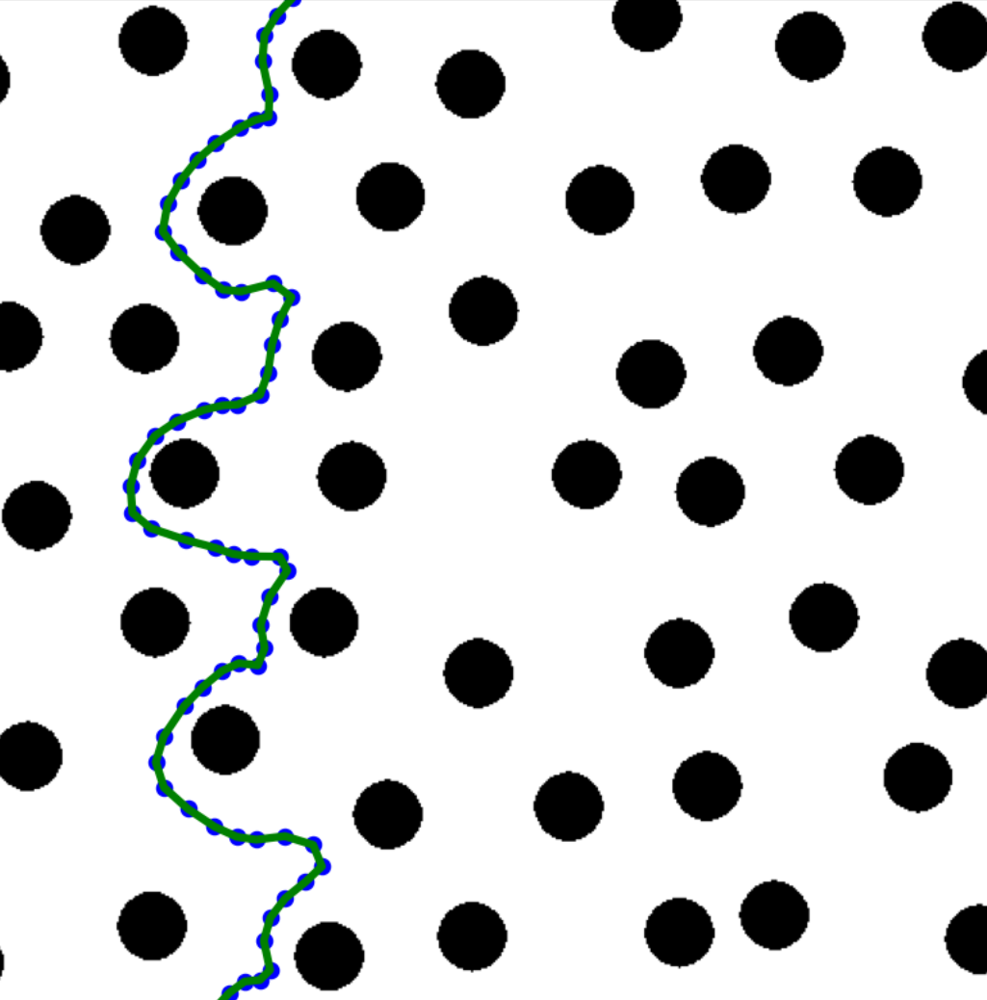

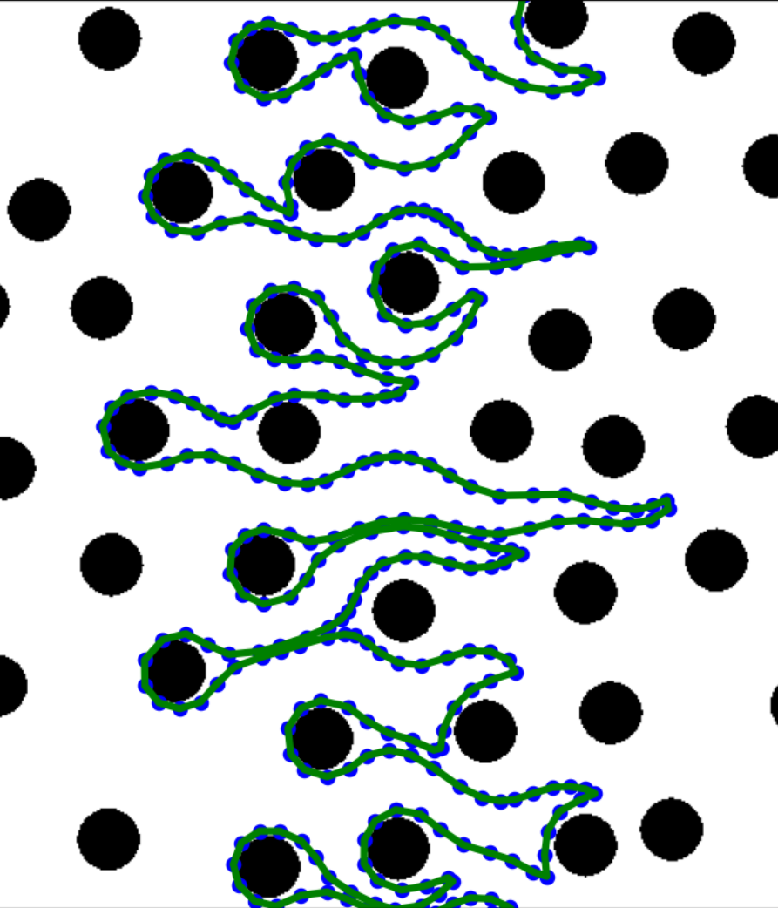

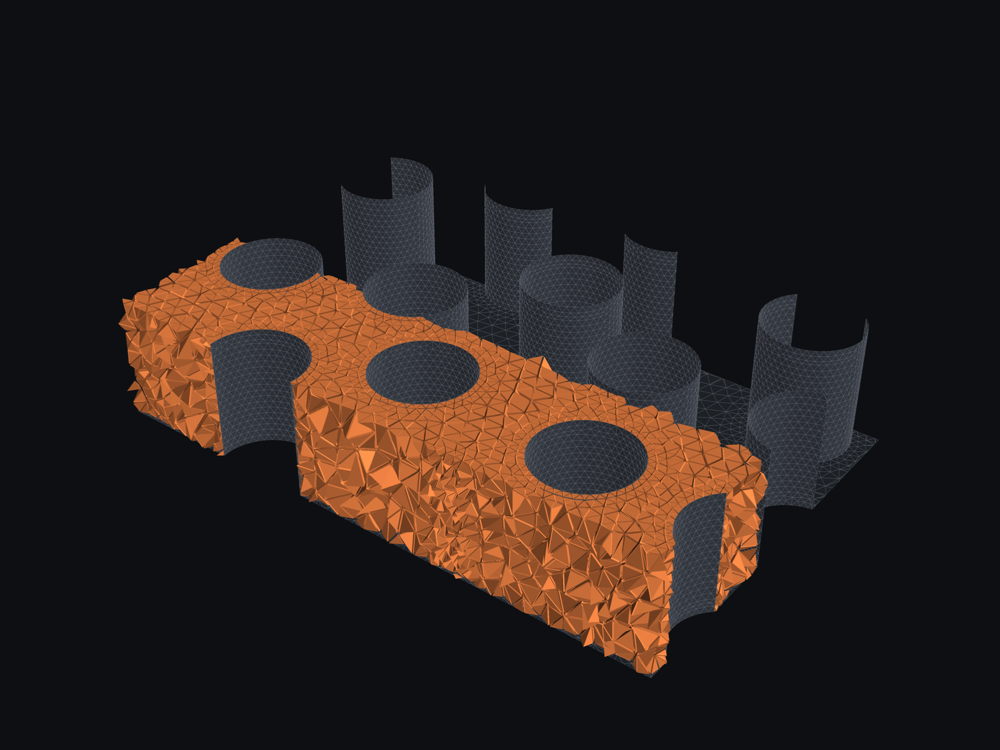

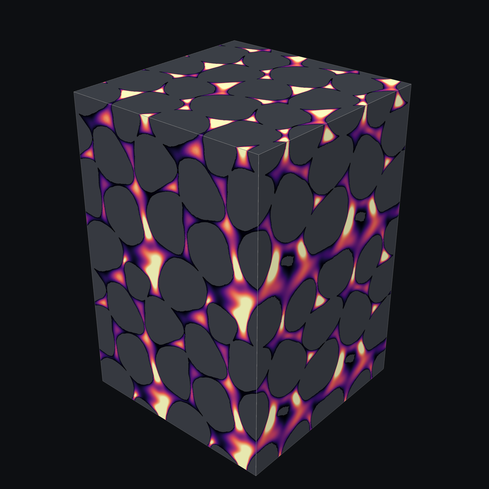

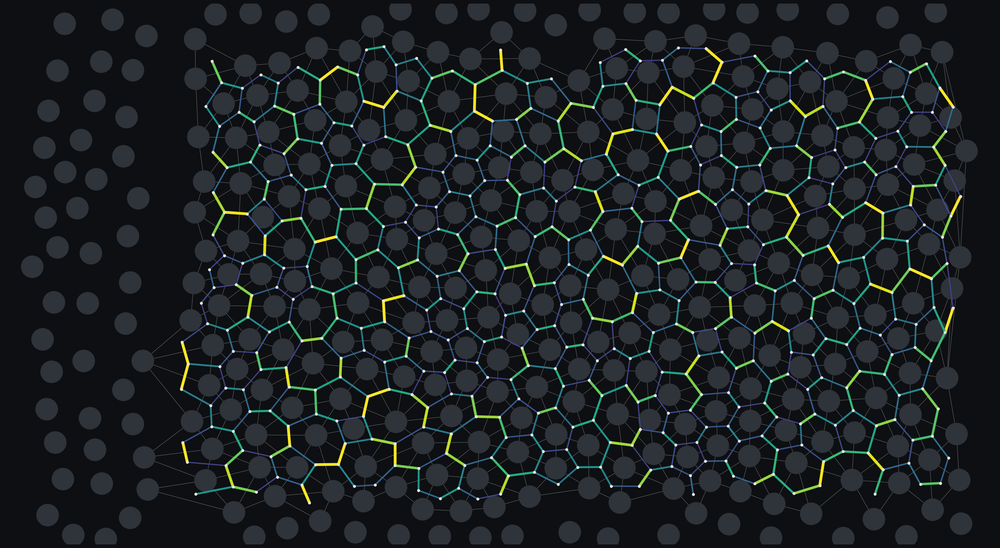

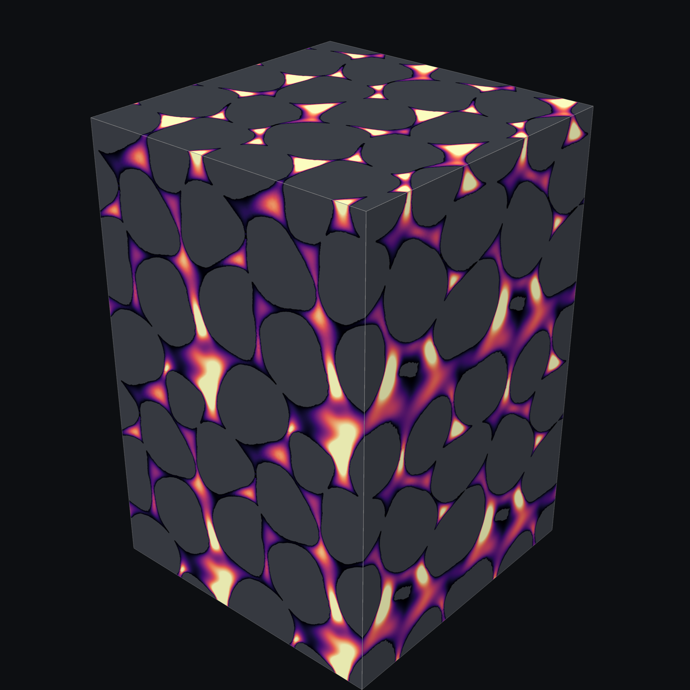

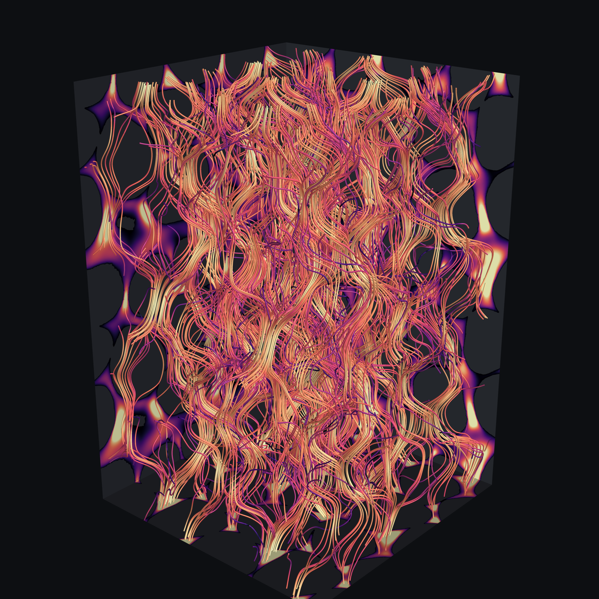
Granular dynamics
Granular pack formation from Yade and HOOMD-blue, plus some meshes formed with Gmsh. I have been very interested in sediment transport and granular flow simulation for some time and hope to have more time to work on this some day.

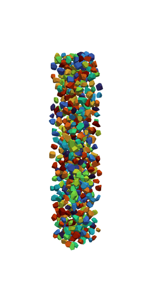

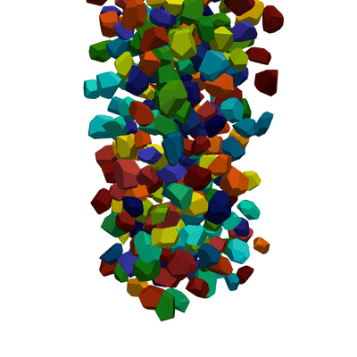

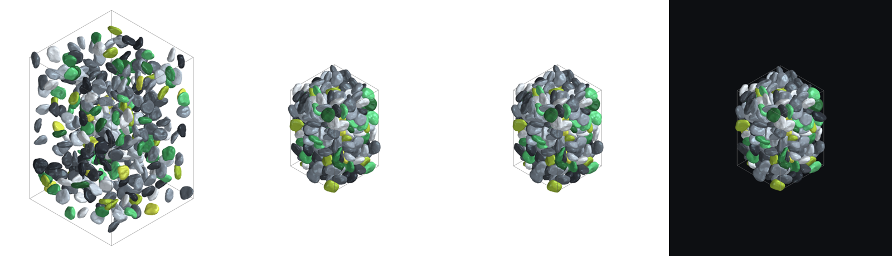


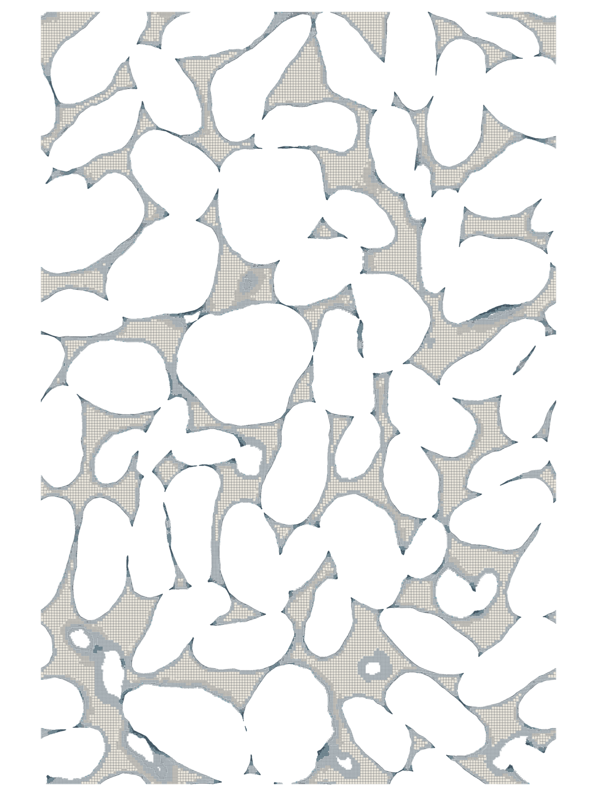

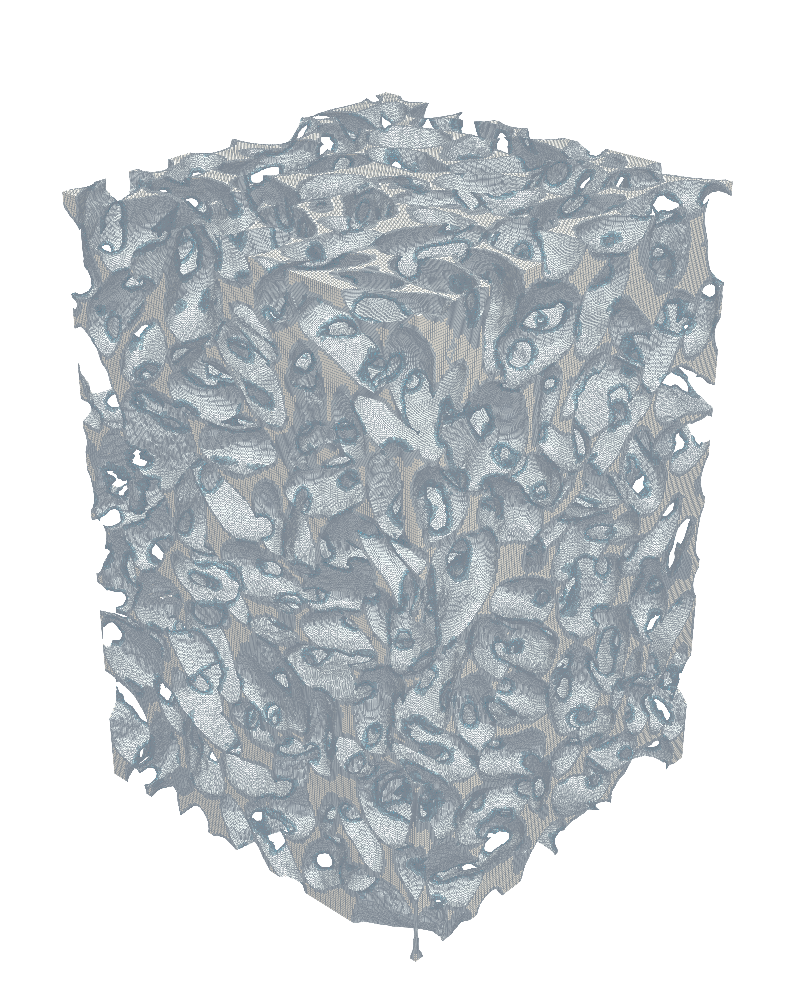
Machine-learning for data treatment and analysis
Here is a custom filament-finding pipeline and divergence-cleaning algorithm.

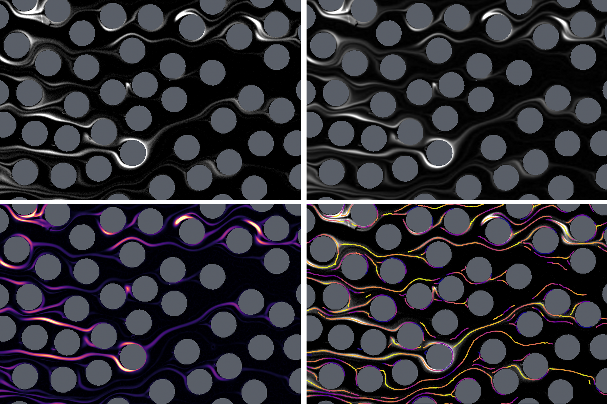

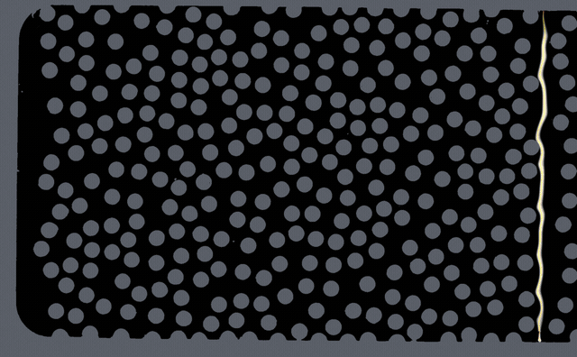